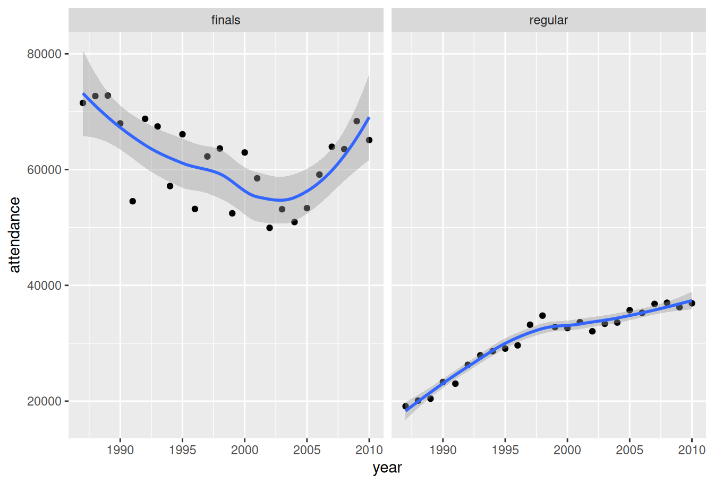
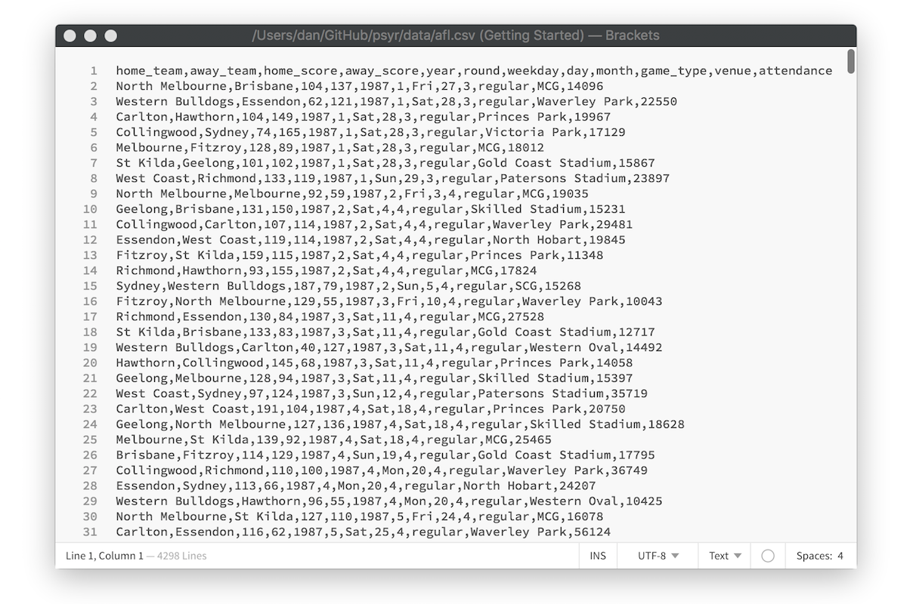
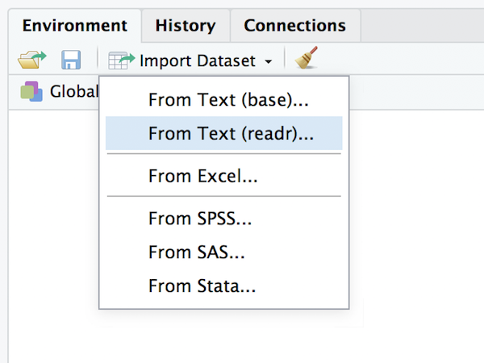
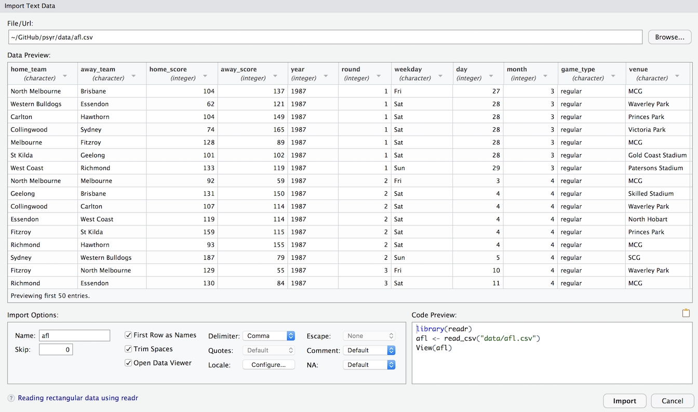
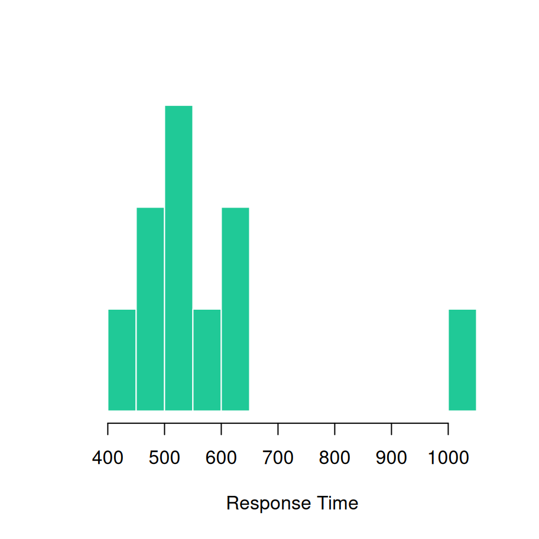

When teaching statistics and data analysis, there is a school of thought that argues that the student should be introduced to actual data as quickly as possible. In one sense I’ve broken that rule rather substantially. The entirety the core toolkit section went by without any real data, much less any data analysis. In my defence, data analysis was never the intended goal of that section. My hope with that section was to teach enough programming concepts that you’d be able to implement a psychological model in R, as we did with the Rescorla-Wagner model previously.
In this section I’m going to shift the focus to data analysis. I won’t talk much about statistical inference about data (that will come in a later section) though. Instead we’ll cover topics like tidying data, summarising data and visualising data. As the focus is now explicitly on data, I’ll now work with real data.
1 Attendance at the football
The data I’ll look at first is one that I put together as part of the Learning Statistics with R book. It consists of information about every game of Australian Rules Football (AFL) played between 1987 and 2010. The data are available in the afl.csv file. Let’s load the data set and take a look at it:
# A tibble: 4,296 × 12
home_team away_team home_score away_score year round weekday day month
<chr> <chr> <dbl> <dbl> <dbl> <dbl> <chr> <dbl> <dbl>
1 North Melbou… Brisbane 104 137 1987 1 Fri 27 3
2 Western Bull… Essendon 62 121 1987 1 Sat 28 3
3 Carlton Hawthorn 104 149 1987 1 Sat 28 3
4 Collingwood Sydney 74 165 1987 1 Sat 28 3
5 Melbourne Fitzroy 128 89 1987 1 Sat 28 3
6 St Kilda Geelong 101 102 1987 1 Sat 28 3
7 West Coast Richmond 133 119 1987 1 Sun 29 3
8 North Melbou… Melbourne 92 59 1987 2 Fri 3 4
9 Geelong Brisbane 131 150 1987 2 Sat 4 4
10 Collingwood Carlton 107 114 1987 2 Sat 4 4
# ℹ 4,286 more rows
# ℹ 3 more variables: game_type <chr>, venue <chr>, attendance <dbl>
For the moment let’s not worry too much about what this code is doing or what the output means. The gist of the output is pretty clear. We have information about 4296 football vgames. For each game we have recorded 12 variables: the names of the home and away team, the number of points scored by each team, information about when the game was played, the venue where it was played, the official attendance statistics, and whether it was a regular home-and-away game or part of the finals series.
That’s nice, but currently our data takes the form of a table with 4296 rows and 12 columns, and I have no idea what any of it means. How do I extract meaningful information out of this data set? Let’s say my goal is to investigate how the average attendance at AFL games has changed over the years, and I’d like to look at regular season games separate from finals. To do so, I first summarise the AFL data in terms of the relevant variables:
Again, while you probably won’t be completely sure how this code works, the gist of it is pretty clear. I’m taking the raw AFL data, grouping the games by the year and whether they were finals games, and calculting the mean attendance. This summary of the data is a huge improvement over the raw data itself, but it’s still just a long list of numbers. Like most people, I don’t enjoy looking at numbers - I like pictures.
As before we can take this attendance data and turn it into something nicer. The command to do ths is a little more involved but again the gist of it should be clear:
pic <- attendance %>%ggplot(aes(x = year, y = attendance)) +# year on x-axis, attendance on y-axisfacet_wrap(~game_type) +# separate "facets" for each game_typegeom_point() +# add the data as "points"geom_smooth() # overlay a smooth regression lineplot(pic)

Yay! We now have something that has meaning to a human reader. Attendance at home and away games (right panel) rose smoothly from 1987 to 2010. For finals games (left panel) the attendance is higher throughout but the trend is different. Average attendance declined somewhat until about 2004 and then rose thereafter. Noting that, a data analyst would be prompted to investigate further.
This brief example highlights several key topics when working with data - we have to import data, summarise data, and visualise it in a fashion that makes intuitive sense to people. My goal in this section is to introduce R tools that we can use to do this. Before diving into the details, I’ll comment on a few things going on in this code.
2 The tidyverse
The first line of code in the AFL example is library(tidyverse). Per the description on the tidyverse website,
The tidyverse is an opinionated collection of R packages designed for data science. All packages share an underlying design philosophy, grammar, and data structures.
When I wrote Learning Statistics with R to accompany my first statistics class the tidyverse didn’t play much of a part, because most of it didn’t exist. Over the last several years the tidyverse has had a huge influence on how data analysis in R is typically conducted, so in these notes I’ll often use on tools from the tidyverse. From now on, when reading the code presented in these notes you should presume that there’s a hidden library(tidyverse) command at the start of every page… because there is! 😀
If you are interested in learning more about the tidyverse and the role it plays in the R data science community, an excellent place to start is with Hadley Wickham and Garrett Grolemund’s book R for Data Science.1 The tidyverse emphasises an approach to data exploration illustrated below:
(You’ll see exactly this image used in a lot of tidyverse related documents)
A typical approach to data analysis involves importing data from an external source, tidying the data and cleaning up any problems with the data set, transforming it in a fashion that extracts the relevant information, visualising the key insights, and so on. Even in the brief analysis I presented above you can see some of this process play out. The tidyverse packages are designed around the goal of making it easy for users to manipulate, summarise and visualise data. Because those are the main goals of this section of the notes I’m going to rely heavily on packages that are in or based on tidyverse.
3 Importing a CSV file
After loading the tidyverse, the next thing I did in my analysis was import the data into R. The raw data itself is stored as a comma separated value (CSV) file, a plain text file in which each row represents a single game, with values separated by commas. Here is what the raw data file looks like in a text editor:

To import this data into a nice format that R can work with, I used the read_csv function. The read_csv function comes from the readr package that is automatically loaded as part of the tidyverse (there is a very similar read.csv function that is comes with “base” R, but I’ve come to prefer the tidyverse version). Here’s the line of code again:
afl <-read_csv("./data/afl.csv")
What this does is import the data from the text file shown in the screen shot, assign it to a variable called afl. The format of the afl variable looks rather like a table. More precisely, it is an example of an R data format called as a tibble. Later we’ll talk more about tibbles, and the closely related data frame. For now, let’s just be happy that we imported the data and that it looks about right.
One thing I will mention is that RStudio provides a nice point-and-click method for importing CSV data. Go to the environment pane, select the “import data set” and then choose “from text (readr)”:

After selecting the file you want to import, RStudio will present you with an import data window that looks like this:

This should look fairly familiar to anyone who has imported data from other software such as Excel or SPSS. I won’t use that method in these notes because it’s easier to type read_csv but it’s worth noting that the option is there.
4 The pipe, %>%
There’s another thing I want to comment on: some new operators have appeared in this example! Many of the operations are familiar from the last section, such as the equality operator == and the assignment operator <-. However there are two entirely new operators, ~ and %>%, and one familiar operator + being used in a novel way:
The tilde operator ~ is used to define formulas in R, which provide a way of describing the relationships between variables. They appear most often in statistical modelling. For instance if I want to build a regression model to describe the relationship between anxiety and demographic variables such as gender and age, I would express the model conceptually using the formula anxiety ~ gender + age. Formulas tend to mean different things in different concepts, but for now it’s enough to note that they’re an abstract way to describe relationships
The addition operator + is being used in an unusual way. When I construct a plot by writing ggplot() + geom_point() + etc I’m not literally doing arithmetic, but I’m doing something conceptually similar… adding layers to a plot. Under the hood, the ggplot2 package (part of the tidyverse) has its own special definition of + that applies to the plots that it draws. Again, I’ll talk more about it later: for now let’s just notice that R does allow packages to do clever things like this 😀
Okay, but what’s the story with %>%???
4.1 The pipe metaphor
The %>% operator is called a pipe, and is discussed in some detail in the R for Data Science book. Unlike the operators we’ve discussed so far (==, &, etc) the pipe %>% isn’t part of base R. It was introduced as part of the magrittr package, and has become widely adopted. You’ll see it appear in many different contexts. Although magrittr isn’t loaded as part of the tidyverse, the tidyverse does exported %>%, and because you should assume from now on that I have the tidyverse loaded, I’ll have access to the pipe for the rest of these notes.
So what is it, and how does it work?
Let’s start by looking at how I used the pipe in the brief analysis above. Here’s the command I used to transform the raw afl data into the smaller summary data attendance:
The question is, how does this code work, and what do those %>% symbols mean? To see what’s happening here, let’s strip this code back to its essential features:
output <- input %>%group_by() %>%summarise()
If we reorganise this so that it all fits in a single line you get a good sense of what’s happening here. We take some input object that then gets passed to group_by() function, the output of group_by() gets passed to summarise(), and the final result gets assigned to output:
output <- input %>%group_by() %>%summarise()
For many people – myself included – this way of thinking about data analysis is appealing. At a conceptual level, data analysis is often a series of transformations that you apply to a data set, so I often have this intuition that what I’m doing is constructing a conveyor belt… data goes in this side, and meaning comes out on that side! This intuition forms the basis of the”pipe” metaphor, and it becomes obvious if we switch from using the leftward assign <- operator to the right assign ->. We take data as an input, pipe it through a series of functions, and out pops something meaningful as our output:
input %>%group_by() %>%summarise() -> output
4.2 An introduction to the pipe
Suppose I have collected data from 10 participants in an experiment, and have recorded their response times to some stimulus, expressed in milliseconds:
A histogram of these data (plotted using the hist function) is shown below:

As is grossly typical of response times, the data have a positive skew and so I might want to work with log-transformed scores. So what I would want to do is log-transform the response time data (using log), then calculate the mean (using mean). Next I would exponentiate the results (using exp) in order to convert the result back to a number in milliseconds. Then I might decide to round it to two decimal places, and print the results to screen. At each step, I’ll need to compute an intermediate result, which I’ll imaginatively call a, b, c and d:
a <-log(response_time)b <-mean(a)c <-exp(b)d <-round(c, digits =2)print(d)
It’s immediately clear that the pipe is serving the same role that all those intermediate variables a, b, c and d were serving in the original version. We can make this a little more explicit like this:
In this version, . shows where the results of the previous command are being passed to the next. If you don’t specify explicitly, then by default %>% will pass the results of one function as the first argument to the next function. Most of the time I won’t bother using . because I think code looks nicer with as little clutter as possible, but it is occasionally useful.
In any case, I think that’s enough on pipes for now!
Footnotes
As I type this, I realise that I’ve unconsciously been influenced by the title. I honestly hadn’t intended R for Psychological Science to serve as an oblique reference to R for Data Science, it just felt like the natural name for the book I wanted to write.↩︎
Well, I suppose the piped version would be more akin to print(round(exp(mean(log(response_time)))),digits=2) but let’s not get bogged down with technicalities↩︎